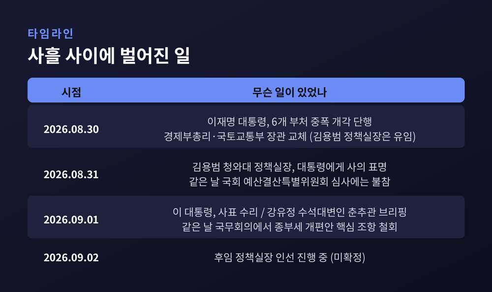
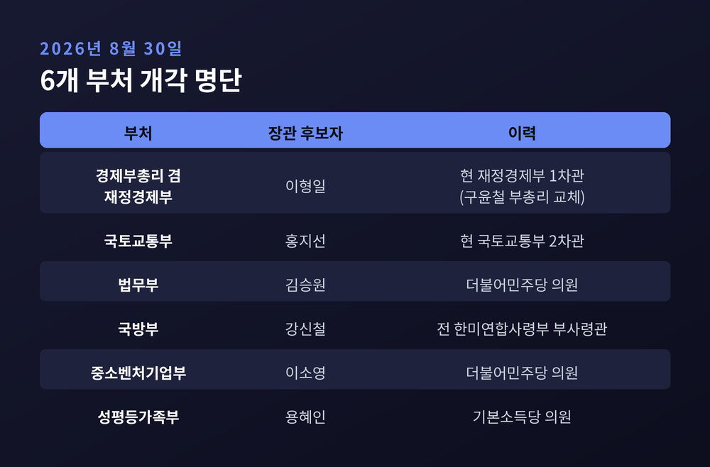
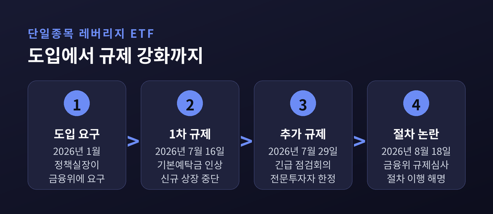
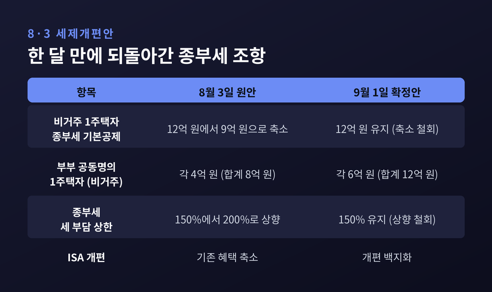
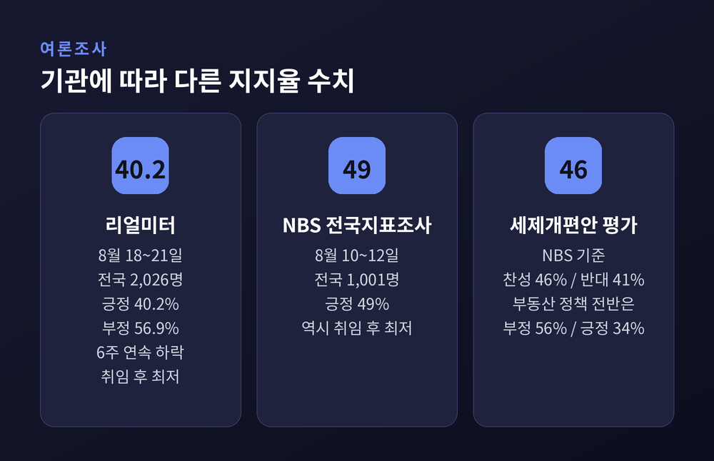
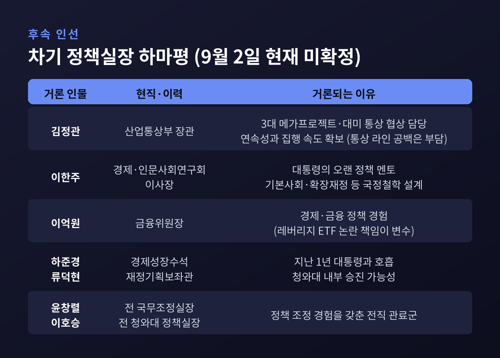

이번 글에서는 2026년 9월 1일 이재명 대통령이 김용범 청와대 정책실장의 사표를 수리한 일을 정리해 보겠습니다. 개각 이틀 만에 벌어진 일이라 파장이 작지 않았습니다. 무슨 일이 있었는지, 왜 이 인사가 주목받는지, 여야는 어떻게 보고 있는지 차례로 짚겠습니다.

시작은 8월 30일이었습니다. 이 대통령이 6개 부처를 대상으로 중폭 개각을 단행했습니다. 경제부총리 겸 재정경제부 장관 후보자에 이형일 재정경제부 1차관, 국토교통부 장관 후보자에 홍지선 국토교통부 2차관이 지명됐습니다. 법무부 장관 후보자에는 더불어민주당 김승원 의원, 국방부 장관 후보자에는 강신철 전 한미연합사령부 부사령관, 중소벤처기업부 장관 후보자에는 더불어민주당 이소영 의원, 성평등가족부 장관 후보자에는 기본소득당 용혜인 의원이 이름을 올렸습니다.
이때 김용범 정책실장은 명단에 없었습니다. 유임이었습니다.
그런데 하루 뒤인 8월 31일, 김 실장이 사의를 표명했습니다. 이 대통령은 이튿날인 9월 1일 사표를 수리했습니다. 강유정 청와대 수석대변인은 이날 춘추관 브리핑에서 "김 실장은 어제 사의를 표명했고, 대통령은 오늘 사표를 수리했다"고 밝혔습니다. 현 정부 출범 이후 실장급 청와대 고위직이 교체된 것은 이번이 처음입니다.
김 실장은 2025년 6월 이재명 정부 초대 정책실장으로 임명됐습니다. 재임 기간은 약 1년 3개월입니다.
경제 지휘 라인의 두 축이 사흘 사이에 함께 비었기 때문입니다.
내각의 경제 사령탑인 경제부총리는 구윤철 부총리에서 이형일 후보자로 교체됐습니다. 청와대의 경제 컨트롤타워인 정책실장 자리도 공석이 됐습니다. 부동산 정책을 담당하는 국토교통부 장관까지 포함하면 경제·부동산 라인의 핵심 인사 상당수가 동시에 바뀐 셈입니다.
김 실장은 단순한 참모가 아니었습니다. 경제·산업·재정 분야 정책 입안과 국정과제 이행을 총괄했고, 한·미 통상협상과 대미 투자 프로젝트를 일선에서 지휘했습니다. 최근 논란이 된 단일종목 레버리지 상장지수펀드(ETF) 도입과 8·3 부동산 세제개편안 마련도 그가 주도한 사안으로 알려져 있습니다.

특정 종목의 주가를 두 배로 따라가는 상품입니다. 김 실장은 2026년 1월 금융위원회에 미국처럼 이런 상품을 국내에도 도입하자고 요구한 것으로 보도됐습니다. 국내 투자자가 투자자 보호장치가 약한 해외 상품에 직접 투자하고 있다는 문제의식이 명분이었습니다.
문제는 도입 이후였습니다. 국내 증시 변동성을 키운다는 비판이 이어지자 금융당국은 규제를 되감기 시작했습니다. 7월 16일 기본예탁금을 올리고 신규 상장을 중단했습니다. 7월 29일에는 정부서울청사에서 긴급 시장상황점검회의를 열고 추가 규제 방안을 내놨습니다. 8월 18일에는 도입 당시 규제심사 절차를 제대로 거쳤는지를 두고 논란이 일자, 금융위가 국무조정실에 사전검토를 요청했고 절차를 적정하게 이행했다고 해명하기도 했습니다.
야당은 이 사안을 사퇴의 핵심 원인으로 지목합니다. 반면 김 실장 본인은 논란 국면에서 책임을 통감한다면서도 시장 상황이 모두 레버리지 상품 탓만은 아니라는 취지로 반박한 바 있습니다.

8월 3일 발표된 세제개편안의 핵심은 과세 기준을 바꾸는 것이었습니다. 그동안 종합부동산세와 양도소득세는 '주택 수'를 기준으로 매겨졌습니다. 개편안은 이를 '실거주 여부와 주택 가액' 기준으로 옮기겠다고 했습니다. 실제로 사는 중간 가격대 1주택자의 부담은 낮추고, 비거주·초고가 주택 과세는 강화한다는 방향이었습니다.
그런데 정부는 9월 1일 국무회의에서 핵심 조항을 스스로 되돌렸습니다.
발표한 지 한 달 만의 후퇴입니다. 정책 수정과 인적 쇄신이 같은 날 이뤄진 셈입니다.
이를 두고 평가는 갈립니다. 시장의 혼선을 인정하고 바로잡은 합리적 조정이라는 시각이 있는가 하면, 원칙 없이 물러선 후퇴라는 비판도 있습니다. 아시아경제는 사설에서 종부세 개편이 29일 만에 유턴했다며 추가 후퇴는 안 된다고 지적했습니다.

여론조사는 기관마다 수치가 다릅니다. 그래서 조사 주체와 시기를 함께 봐야 합니다.
리얼미터가 에너지경제신문 의뢰로 8월 18일부터 21일까지 전국 18세 이상 2,026명을 조사한 결과, 이 대통령의 국정 수행 긍정 평가는 40.2%였습니다. 부정 평가는 56.9%였습니다. 6주 연속 하락한 취임 후 최저치였고, 4주 연속 오차범위 밖에서 부정 평가가 우세했습니다.
전국지표조사(NBS)는 다른 그림을 보여줍니다. 엠브레인퍼블릭·케이스탯리서치·코리아리서치·한국리서치가 8월 10일부터 사흘간 1,001명을 조사한 결과 긍정 평가는 49%였습니다. 역시 취임 후 최저치입니다. 부동산 정책에 대해서는 56%가 잘못하고 있다고 답했고, 34%가 잘하고 있다고 답했습니다. 다만 8·3 세제개편안 자체에 대해서는 찬성 46%, 반대 41%로 평가가 팽팽했습니다.
정책 방향을 지지하는 여론과 집행 방식에 실망한 여론이 함께 존재한다고 읽을 수 있는 대목입니다.

이번 사의를 어떻게 볼 것이냐에 대해서는 설명이 엇갈립니다. 하나로 단정하기 어렵습니다.
첫째, 본인의 설명입니다. 김 전 실장은 경향신문과의 통화에서 "오래전부터 대통령께 계속 설득을 해왔다"고 밝혔습니다. 대통령이 "대안이 뭐냐"고 만류하다가 8월 31일에야 뜻을 받아들였다는 것입니다. 그는 페이스북에 남긴 글에서도 "해야 할 일은 여전히 많지만 이제는 제가 자리를 비우고 다음 사람들이 또 자기 몫을 해나갈 때라고 생각했다"고 적었습니다.
둘째, 청와대의 설명입니다. 청와대 관계자는 "정책 집행에 있어 원활한 동력을 제공하기 위한 인적 개편"이라고 말했습니다. 참모의 평균 재임 기간이 1년 2개월에서 1년 6개월 수준이라는 점도 함께 언급됐습니다. 통상적인 교체 주기 안에 있다는 취지입니다.
셋째, 야당과 일부 언론의 해석입니다. 레버리지 ETF와 부동산 세제를 둘러싼 혼선, 그리고 지지율 하락에 대한 사실상의 문책이라는 것입니다. 경향신문은 사설에서 오히려 사퇴가 한발 늦었다고 평가했습니다.
세 설명 가운데 무엇이 실제에 가까운지는 아직 확인되지 않았습니다.
야당인 국민의힘은 사퇴만으로는 부족하다는 입장입니다. 장동혁 대표는 SNS에 "김용범 청와대 정책실장이 사퇴했다. 국민에게 쫓겨난 것"이라며 "사퇴로 끝낼 일이 아니다"라고 적었습니다. 박충권 수석대변인은 논평에서 "참모의 사퇴로 적당히 넘어가려 한다면 이는 전형적인 꼬리 자르기"라고 비판했습니다. 정점식 원내대표는 이억원 금융위원장과 이찬진 금융감독원장의 경질을 요구하며 레버리지 ETF 도입에 대한 국정조사가 필요하다고 주장했습니다. 국민의힘은 국정조사 요구서를 제출하겠다는 방침입니다.
여당인 더불어민주당은 사표 수리 당일 공식 논평을 내지 않았습니다. 다만 익명을 전제로 한 당내 목소리는 전해졌습니다. 지도부의 한 재선 의원은 "부동산, 주식 문제로 대통령 지지율이 떨어지니 김용범이 부담을 느끼고 용단을 내린 것 같다"고 말했습니다. 또 다른 중진 의원은 레버리지 ETF로 국민이 재산상 피해를 입었으니 누군가 책임져야 한다는 의견이 당내에 많았다고 전했습니다.
정리하면, 야당은 공개적으로 책임 범위를 넓히자고 요구했고 여당은 공식 대응을 자제했습니다. 다만 여당 내부에도 책임론이 있었다는 점은 여러 매체가 공통으로 전하고 있습니다.
두 갈래 관측이 있습니다.
기조가 유지될 것이라는 쪽은 이 대통령의 9월 1일 국무회의 발언을 근거로 듭니다. 이 대통령은 금리 상승이 불가피하다면서도 취약계층의 고통과 성장잠재력 훼손을 막기 위해 "재정이 정교한 역할 분담에 나서야 한다"고 말했습니다. 인공지능과 반도체를 포함한 3대 메가프로젝트, 7대 시드 프로젝트, 공공주택 20만 호 공급, 농어촌 기본소득 확대 등 기존 정책도 예정대로 추진하겠다고 했습니다. 후임 경제부총리로 지명된 이형일 후보자 역시 현 정부 경제정책의 설계와 집행에 참여해온 인물입니다. 청와대는 발탁 배경으로 정책 전환이 아니라 실행 역량을 강조했습니다.
반대로 부분 수정이 불가피하다는 관측도 있습니다. 종부세 개편안이 실제로 되돌려졌고, 레버리지 상품 규제도 계속 강화되는 흐름입니다. 이 대통령도 같은 날 "정부안이 언제나 옳은 것도 아니고 완벽할 수도 없다"며 보완 가능성을 열어뒀습니다.
9월 2일 현재 후임 정책실장은 정해지지 않았습니다. 강유정 수석대변인은 "국정 수행에 차질이 없도록 후속 인사를 추진할 계획"이라고 밝혔습니다.
언론에 오르내리는 이름은 여럿입니다. 가장 먼저 거론되는 인물은 김정관 산업통상부 장관입니다. 3대 메가프로젝트와 대미 투자·통상 협상을 담당해온 만큼 연속성과 집행 속도를 함께 확보할 수 있다는 평가가 나옵니다. 다만 대미 협상이 진행 중인 상황에서 산업부 수장을 옮기면 통상 지휘라인에 공백이 생긴다는 점이 부담으로 지적됩니다.
이 대통령의 오랜 정책 멘토로 꼽히는 이한주 경제·인문사회연구회 이사장, 이억원 금융위원장, 권대영 금융위원회 부위원장, 임기근 국무조정실장, 하준경 경제성장수석, 류덕현 재정기획보좌관, 윤창렬 전 국무조정실장, 이호승 전 청와대 정책실장 등도 하마평에 올라 있습니다. 이 가운데 이억원 위원장은 레버리지 ETF 논란의 책임에서 자유롭지 않다는 점이 변수로 거론됩니다.
어느 쪽이 낙점되느냐에 따라 방향이 달라질 수 있습니다. 현 정부 정책 철학을 공유하는 관료나 내부 참모가 기용되면 기존 노선을 유지하면서 집행력을 높이는 데 무게가 실릴 것으로 보입니다. 반대로 시장 친화적 외부 인사가 오면 부동산 세제와 금융규제에서 속도 조절이 이뤄질 가능성이 있습니다.

정리하면 이렇습니다.
이번 교체는 사람 한 명이 바뀐 일이 아니라, 경제부총리와 국토교통부 장관, 청와대 정책실장이 사흘 안에 함께 움직인 지휘체계 재편입니다. 청와대는 집행력 보강이라고 설명하고, 야당은 책임 회피라고 반박합니다. 여당은 공식 언급을 삼갔지만 내부에는 책임론이 있었습니다. 평가는 이렇게 갈려 있습니다.
확실한 것은 하나뿐입니다 — 남은 판단은 후임자가 무엇을 어떻게 바꾸느냐에 달려 있습니다.
빈자리는 채워지기 마련입니다. 다만 그 자리에 누가 앉느냐가 다음 1년의 경제정책을 말해줄 것입니다.